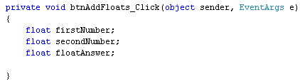
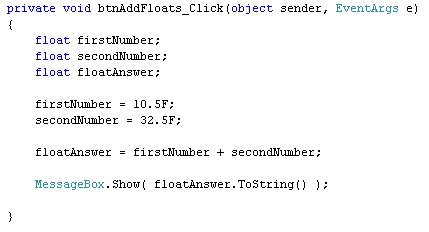
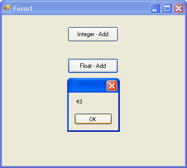
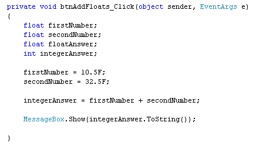
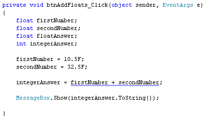
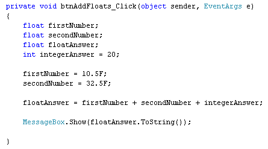

Adding up with float Variables
<< Continues from the previous lesson
You add up with float variables in exactly the same way - with the plus symbol. You can even mix integer variables with float variables. But you have to take care!
Add another button to your form, and set the following properties for it in the Properties Window:
Name: btnAddFloats
Size: 100, 30
Text: Float - Add
Double click your button to get at the code. Set up the following variables:
float firstNumber;
float secondNumber;
float floatAnswer;
And here's the coding window:

(Notice that we've used the same names for the first two variables. C# doesn't get confused, because they are in between the curly brackets of the button code. You can set up variables outside of the curly brackets. We'll do this when we come to code the calculator, at the end of this section. Then something called scope comes in to play. Don't worry about it, for now.)
To place something in your new variables, add the following code:
firstNumber = 10.5F;
secondNumber = 32.5F;
floatAnswer = firstNumber + secondNumber;
Finally, add you message box line:
MessageBox.Show( floatAnswer.ToString( ) );
The coding window should look like this:

Run your form and click your new button. You should see this:

So 10.5 + 32.5 equals 43. Halt your form by clicking the red X, and return to your coding window.
As was mentioned, you can add float and integer values together. But you need to take care. Try this:
Add the following variable to your code:
int integerAnswer;
And then change this line:
floatAnswer = firstNumber + secondNumber;
To this:
integerAnswer = firstNumber + secondNumber;
So it's just the name of the variable before the equals sign that needs to
be changed.
Amend you message box line from this:
MessageBox.Show( floatAnswer.ToString( ) );
To this:
MessageBox.Show( integerAnswer.ToString() );
Your coding window will then look like this:

Try to run your code. The programme won't execute, and you'll have a blue wiggly line:

Hold your mouse over the blue wiggly line and you'll see an explanation of the error:
Not much help, if you're a beginner! But what it's telling you is that the first number and the second number are float variables. The answer to the addition was also a float. However, you were trying to store the answer in an integer variable. C# won't let you store float values in an integer. The error message is saying that you need to convert them first.
You can indeed convert float values to integers. You do it like this:
integerAnswer = (int) firstNumber + (int) secondNumber;
So you type the word int between a pair of round brackets. This goes before the number you want to convert. It does mean that the point something on the end will get chopped off, though. So 10.5 becomes 10, and 32.5 becomes 32. Not good for accuracy, but at least the programme will run!
Try it out, and you should see an answer of 42 when you click your button.
So the moral is this: If you're expecting an answer that ends in point something, use a float variable (or a double).
(You may have a green wiggly line under float floatAnswer. This is because you're not storing anything in this variable. Don't worry about it!)
Note that the other way round is not a problem - you can store an integer in
a float value. Have a look at this slight change to the code:

First, notice the new way we are storing the number 20 into the integer variable called integerAnswer:
int integerAnswer = 20;
Instead of two lines, we've just used one. This is fine, in C#. But you're doing two things on the same line: setting up the variable, and placing a value in it.
The second thing to notice is that we are adding up two float values (firstNumber and secondNumber) and an integer (integerAnswer). We're then storing the answer into a float variable (floatAnswer). Try it out and you'll find that the code runs fine.
If we change this line:
firstNumber = 10.5F;
to this:
firstNumber = 10;
then, again, the programme will run fine. In other words, you can store an integer in a float variable, but you can't store a float value in an integer variable without converting.
Hopefully, that wasn't too confusing!
We'll move on to subtraction, now. But if you want to use a double variable instead of a float variable the same things apply - be careful of what you are trying to store, and where!